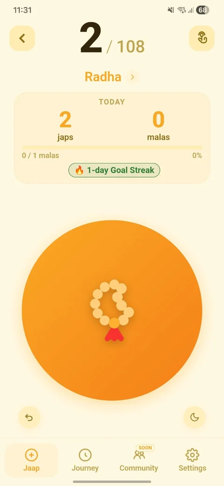

Count naturally
Tap the on-screen mala, set an Auto pace, or use your phone's volume buttons. Optional Background Auto can continue with the screen off and asks you to review pending japs before saving.
RJ Dev Studio's first public app
Jaap Counter is a Hindu devotional digital mala and mantra counter built for daily japa, meditation, personal goals, and long-term practice journeys.

Made for daily sadhana
Choose a simple counting flow, keep each mantra journey separate, and review progress when reflection is useful.
Tap the on-screen mala, set an Auto pace, or use your phone's volume buttons. Optional Background Auto can continue with the screen off and asks you to review pending japs before saving.
Tap the mantra name to keep the full verse in a calm, distraction-free view. Tap, Auto, and Volume counting continue in the selected mode.
Choose a mala size, set a daily goal, and keep separate mantra profiles with their own appearance, themes, and optional wallpapers.
Review daily, weekly, monthly, and yearly progress with streaks, practice time, recaps, milestones, and carefully reviewed manual additions.
Core counting works offline. Use smart reminders, a meditation timer, completion sounds and haptics, a home-screen widget, and an English or Hindi interface when they are useful.
Backup and Premium
Jaap Counter does not require an RJ Dev Studio account. Google Play manages the one-time Premium purchase and regional price.
Available without Premium
One-time Google Play unlock
appDataFolderDrive backup is optional. Jaap Counter requests the limited drive.appdata scope and cannot browse unrelated files in your Google Drive.
Ready when you are
Jaap Counter is available for Android from Google Play.